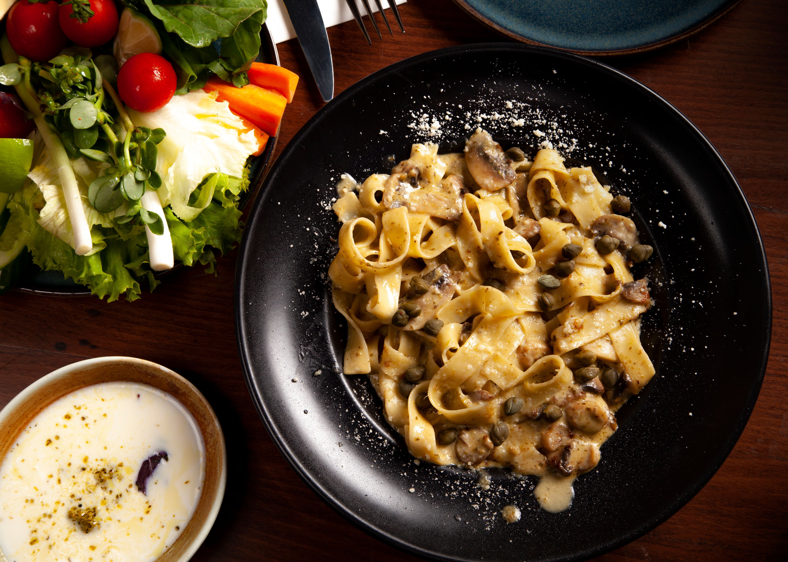

Pasta

Pasta is a well-renowned dish appreciated everywhere.
So there was not a reason not to add it.
Ingredients
- Pasta
- Olive oil
- Garlic
- Tomato sauce
- Salt
- Black pepper
- Parmesan cheese
- Fresh basil
Steps
- Bring a pot of salted water to a boil.
- Cook the pasta until al dente.
- Heat olive oil in a pan and cook the garlic.
- Add the tomato sauce and simmer for a few minutes.
- Drain the pasta and add it to the sauce.
- Toss well to coat the pasta evenly.
- Serve with Parmesan cheese and fresh basil.
Home
Disclaimer: the recipe is AI-generated, so verify the steps before proceeding.